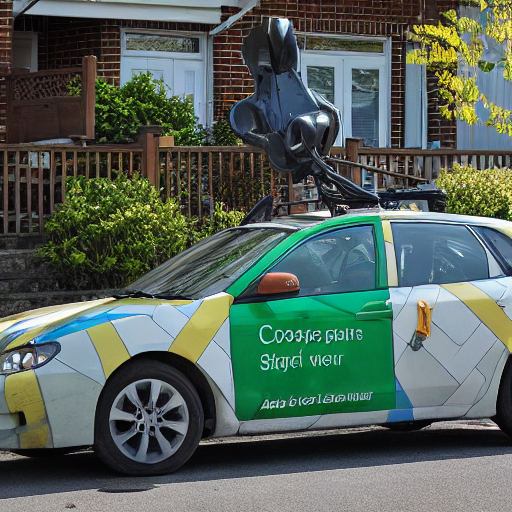
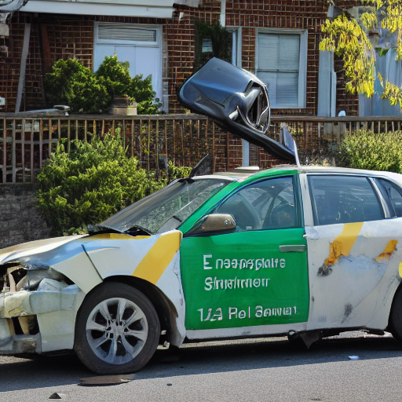
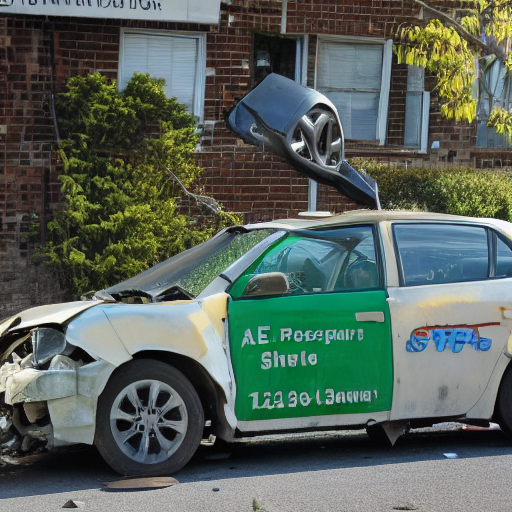
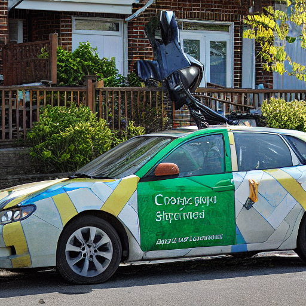
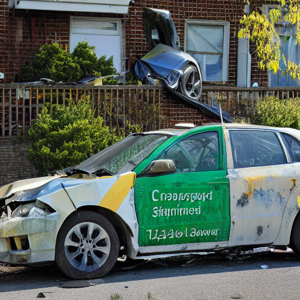
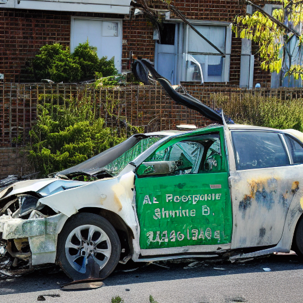
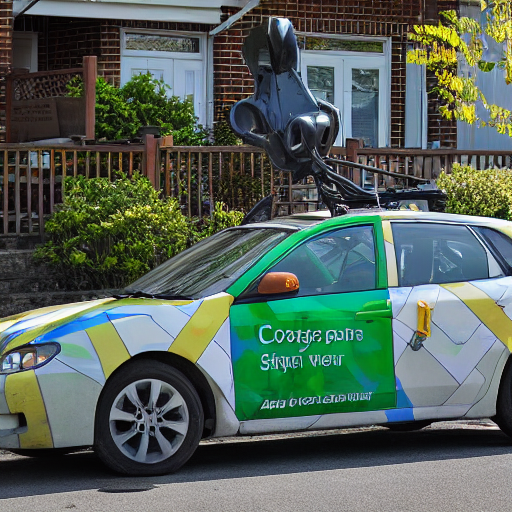
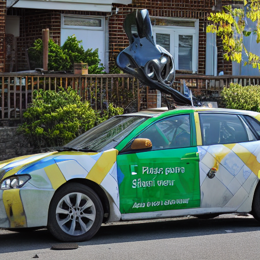
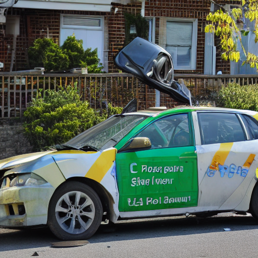
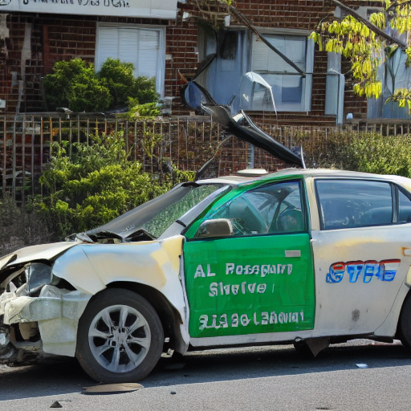

prompt = a wrecked car after an accident，w=7.5，n_edit=10，三臂共用同一個 ε。
這是遷移不是匹配設定：防禦圖在 strength=0.5 下訓練，在其他 strength 上評測。匹配設定應優於此，故本頁是下界。
| strength = 0.2 | strength = 0.3 | strength = 0.4 | strength = 0.5 | |
|---|---|---|---|---|
| undefended |  siglip=0.0587niqe=3.42 |
siglip=0.0619 niqe=3.18 |
 siglip=0.0973niqe=2.79 |
 siglip=0.1090niqe=2.94 |
| site_P |  siglip=0.0752niqe=3.98 |
siglip=0.1142 niqe=4.14 |
 siglip=0.1138niqe=3.63 |
 siglip=0.1139niqe=3.72 |
| site_C |  siglip=0.0465niqe=3.19 |
 siglip=0.0499niqe=3.04 |
 siglip=0.0818niqe=2.81 |
 siglip=0.1096niqe=2.73 |